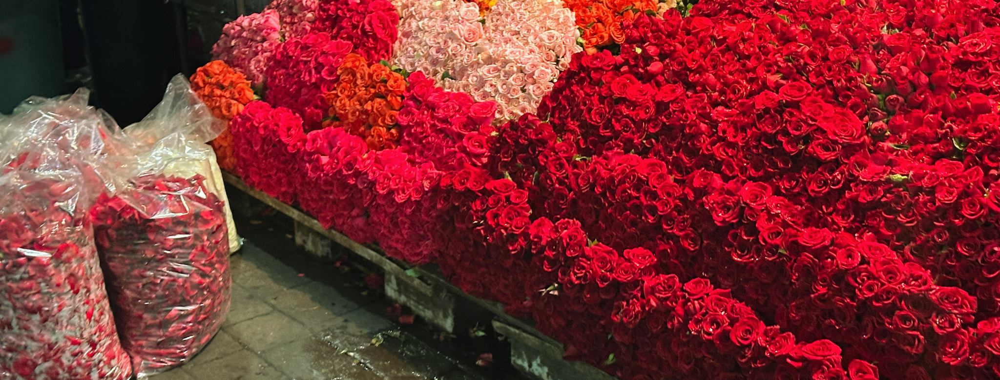
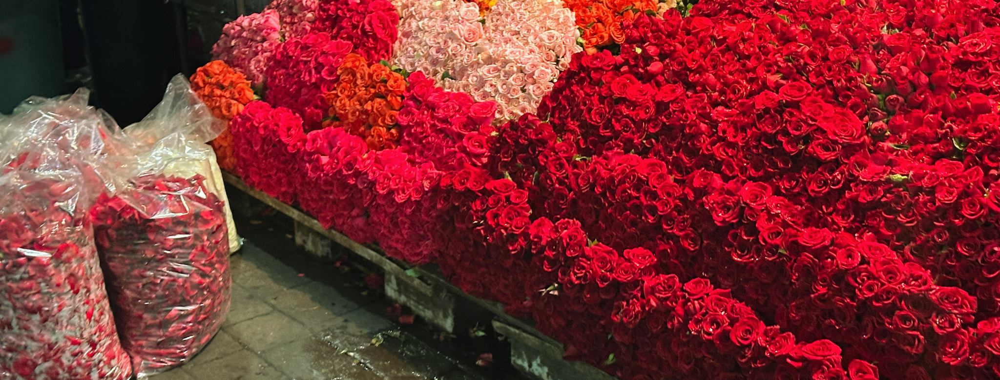

Mercado de Jamaica
El Mercado de Jamaica es uno de los recintos más emblemáticos de la Ciudad de México, un espacio
que combina tradición, color y aroma en cada pasillo. Reconocido como el mercado de flores más
importante de la ciudad y un destino obligado para visitantes nacionales e internacionales,
ofrece una experiencia sensorial única.
Aquí, la vista y el olfato se deleitan con un auténtico
paraíso floral que refleja la riqueza cultural y natural de México.
Las Flores
Las flores que dan vida al Mercado de Jamaica llegan desde distintos rincones de México. Los
pasillos del mercado se llenan cada día con cargamentos provenientes de estados como Puebla,
Michoacán, Chiapas, Veracruz, Oaxaca y el Estado de México, regiones donde la tierra fértil y el
clima diverso permiten cultivar una increíble variedad de especies. Desde los crisantemos y
gladiolas que marcan las celebraciones tradicionales, hasta rosas, claveles y plantas
ornamentales poco comunes, cada flor cuenta una historia ligada al campo mexicano. Este
recorrido, del cultivo a los puestos del mercado, no solo conecta a la ciudad con el trabajo de
miles de productores, sino que convierte a Jamaica en el corazón del comercio floral del país.
 
